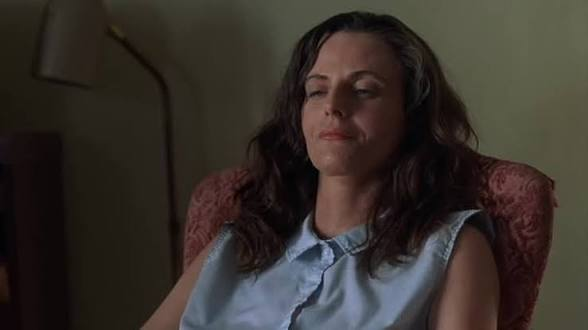

🥈 🌾 🌸 CHRYSTAL (2004) — CERTIFIED MGC AU-58

🏛 MGC LOWER COURT OF APPEALS
- ASSET TITLE: Chrystal (2004) – The Arkansas Backwoods Grief Alloy
- OFFICIAL REGISTRY GRADE: Certified MGC AU-58 (Choice About Uncirculated Specimen)
- PRESIDING HIGH BENCH: Judge Morpheus & Chief Grader MGC
- CASE FILE: #028
📜 THE INITIAL INQUEST BENCH ASSESSMENT (3-FLAW DEFECT LOG)
Morpheus completely locks his visors to steady and lays out his uncirculated initial assessment of Billy Bob Thornton’s raw, unvarnished rural masterpiece:
🚨 Key Planchet Flaws:
🔍 Flaw 1 (The Narrative Friction Blemish)
- Under our strict 5x magnifying lens, the cinematic alloy experiences a localized pacing bottleneck during the slow-burning second-act transitions. The deep, heavy backwoods mourning structure occasionally stalls the film’s continuous linear dramatic velocity, leaving a slight surface contact scratch on the pacing canvas.
2. 🔍 Flaw 2 (The Over-Saturated Southern Contrast Bleed)
- The independent digital cinematography intentionally introduces heavy, sun-bleached exposure bleed across the rural landscape frames. While this adds immensely to the raw, atmospheric luster of the setting, it creates a noticeable visual grain that disrupts absolute optical purity.
3. 🔍 Flaw 3 (The Third-Act Resolution Fatigue)
- The sudden narrative convergence of the old criminal family lineage logs introduces a minor localized friction against the stark, unvarnished realism established in the opening acts, keeping the planchet just a razor-thin fraction beneath the Mint State vault thresholds
-
CHRYSTAL
My grandma told me… she told me if a person could get their body and their mind completely quiet… empty out all the noise of the world… that you’d start to hear the things nature usually hides from us.
She said if you sat in the deep silence long enough, you could actually hear the friction of the dirt moving. You could hear the petals unfurling.
(whispering, looking away)
“Oh, I can hear those flowers growing, Grandma.”
(beat)
But Joe… my world has gotten too quiet. My ears are ringing with it. It’s so quiet that my senses are amplified, and I can hear things I shouldn’t. If Grandma could hear the flowers growing in the quiet… then I know I’m not crazy for hearing my baby’s heartbeat trapped inside my own neck.
⚖️ THE APPELLATE REVIEW & REVERSAL ARGUMENTS
Motion 1 (The Narrative Friction Blemish): SUSTAINED.
- The slow-burning second-act mourning structure creates a genuine pacing bottleneck that prevents continuous forward velocity.
Motion 2 (The Over-Saturated Southern Contrast Bleed): OVERRULED.
- Under closer inspection, the sun-bleached exposure and heavy rural grain are cleared as essential atmospheric craftsmanship that perfectly capture the raw Arkansas setting.
Motion 3 (The Third-Act Resolution Fatigue): SUSTAINED.
- The sudden convergence of the old criminal family lineage introduces slight structural friction against the stark realism of the opening acts.
⚖️ THE FINAL DECREE & CERTIFIED JUDGMENT
-
The Executive Verdict:
By overruling the visual grain objection while sustaining the second-act pacing bottleneck and third-act lineage friction, the specimen sits right at the top of the About Uncirculated register. -
Certified Grade Lock:
Anchored by Billy Bob Thornton’s restrained grit and Lisa Blount’s unforgettable, quiet intensity, the High Bench officially seals this specimen at Certified MGC AU-58 (Choice About Uncirculated Specimen). BLACK LABEL. Case File #028 is officially closed. ⚖️🥈🌾

• © 2026 MOVIE GRADING CONSENSUS. All Sovereign Rights Reserved.